Chiesa di Santa Venera.
Rilievo della Chiesa di Santa Venera di Acireale (CT), effettuato mediante Laser scanner, stazione totale, triangolazioni con distanziometro.
Colleghi:
Software utilizzati:
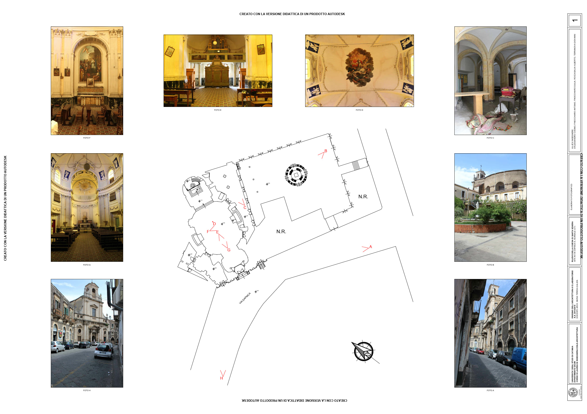 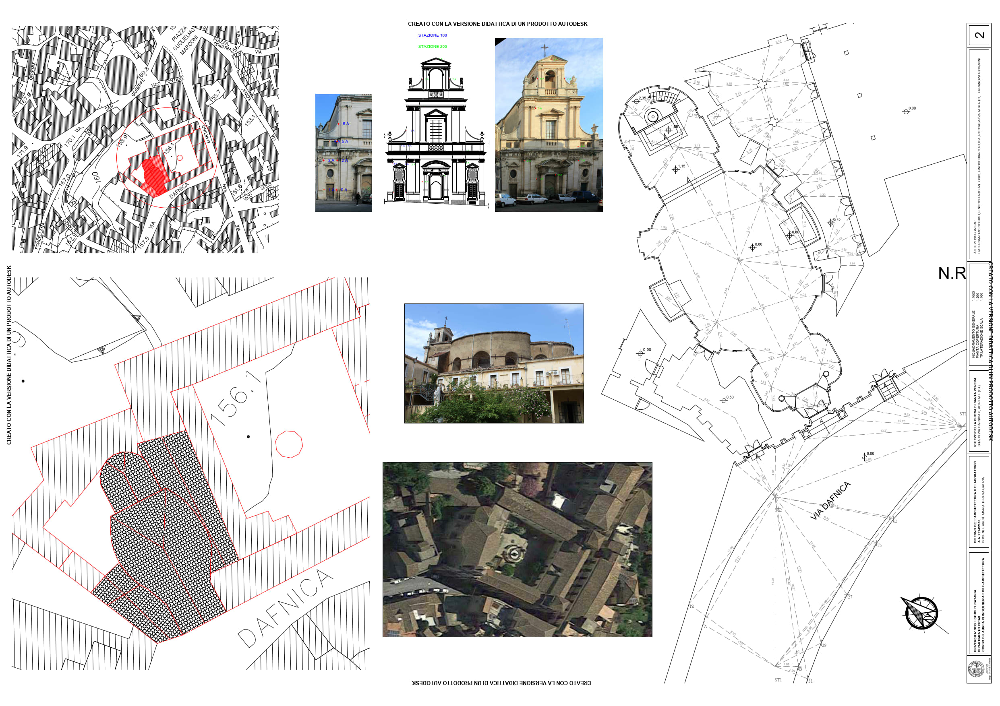 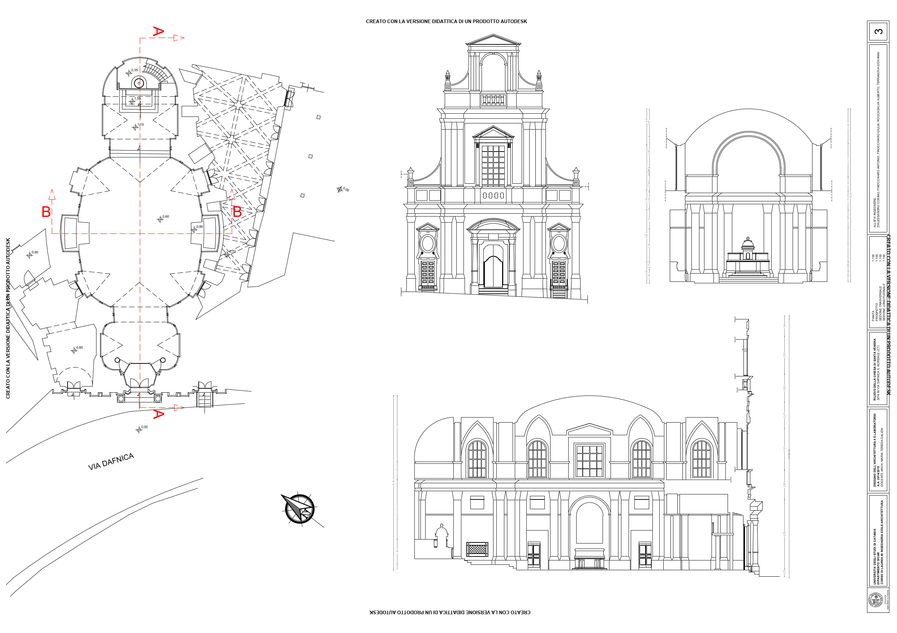 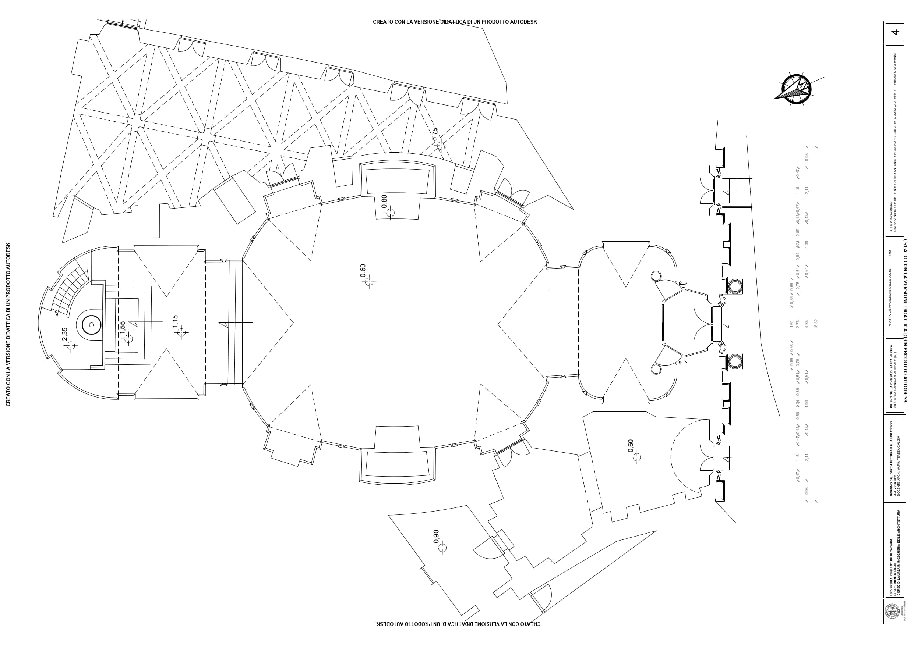 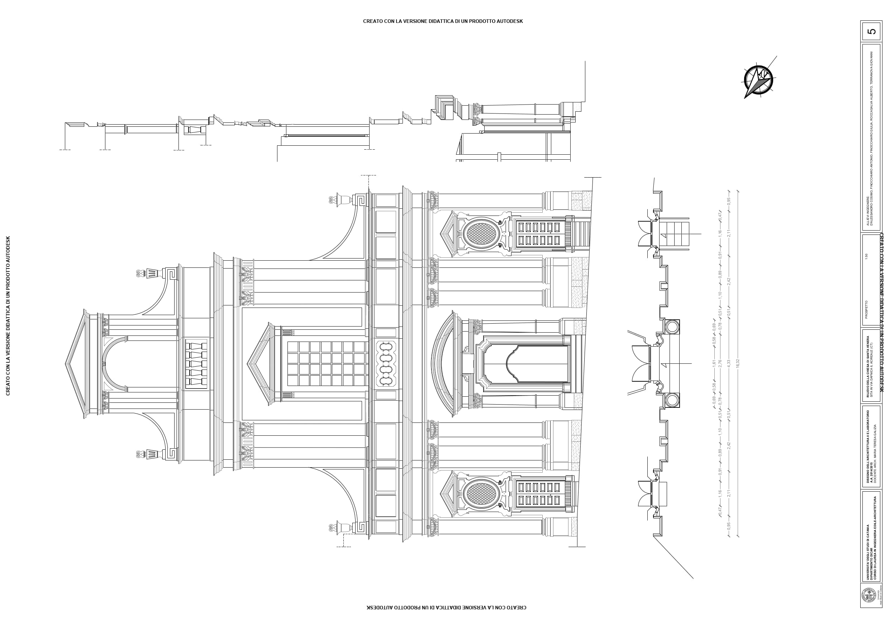
 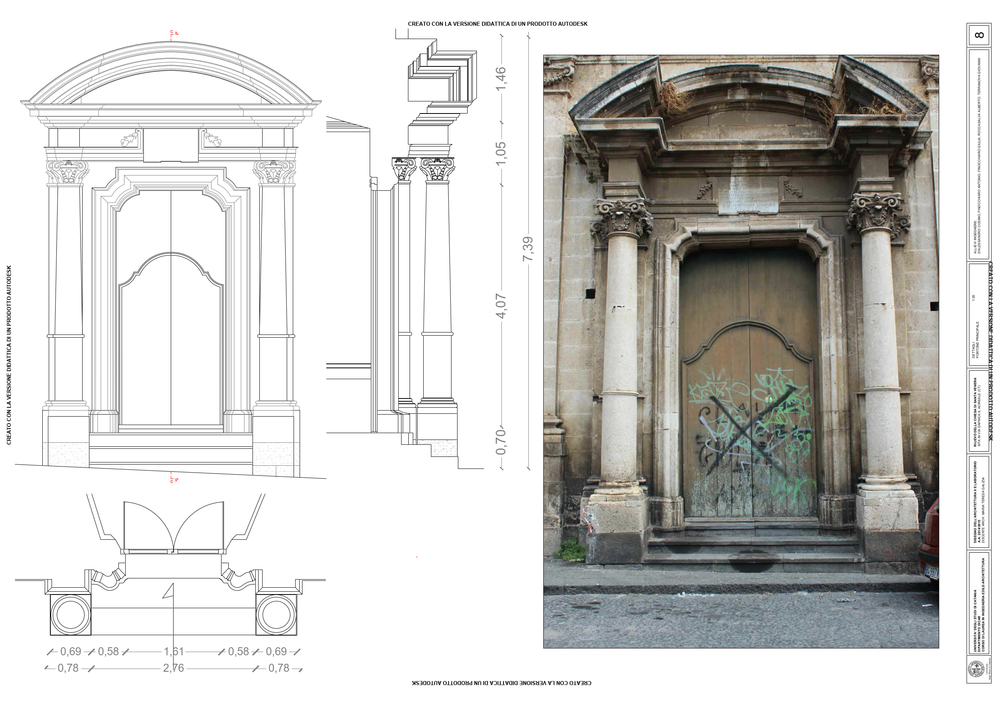
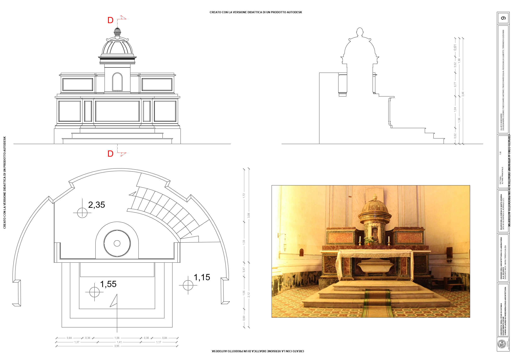
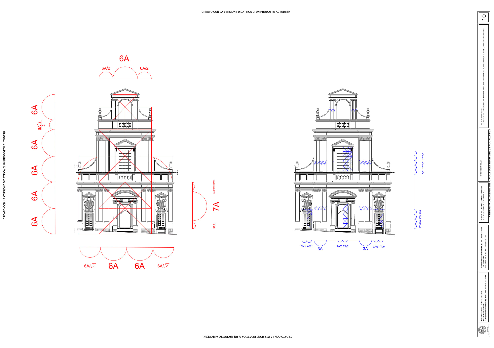
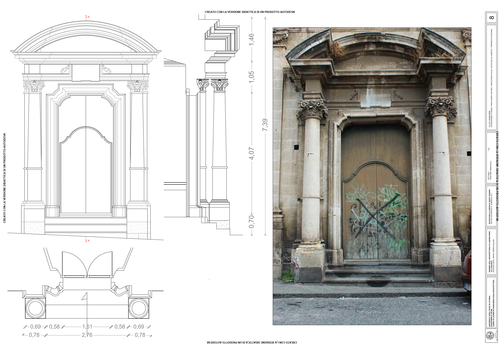
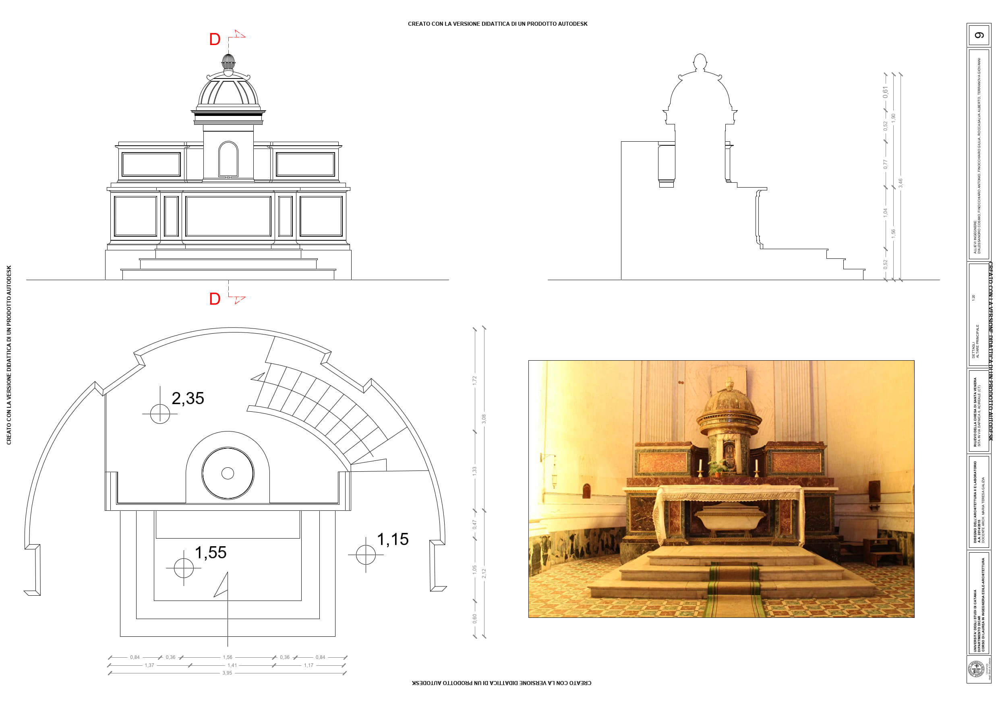
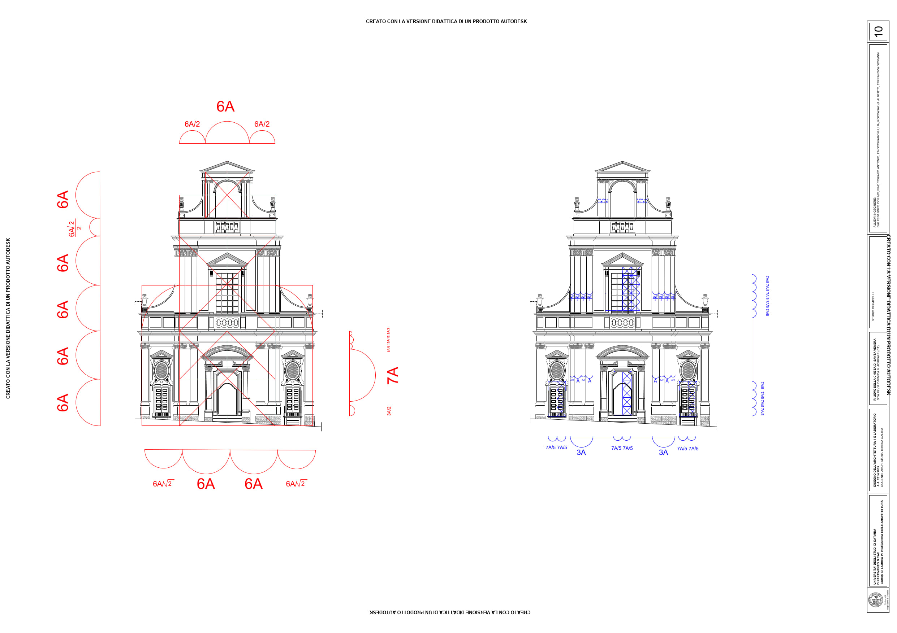